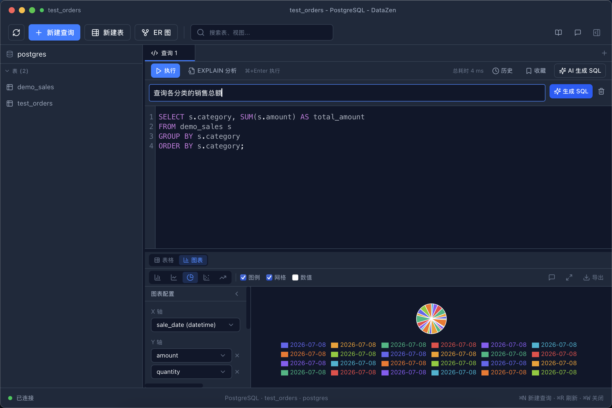
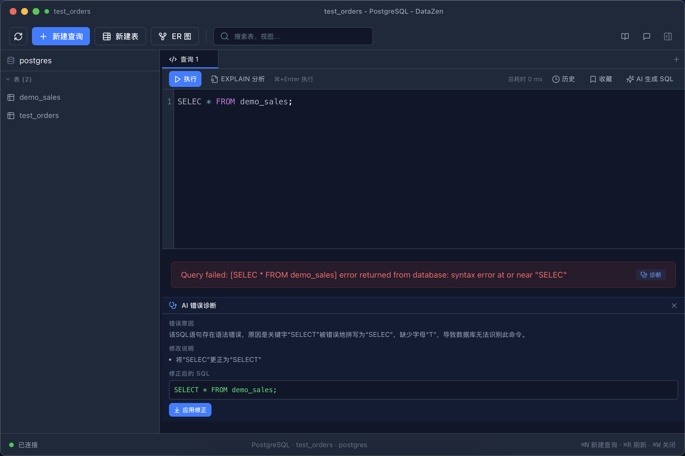
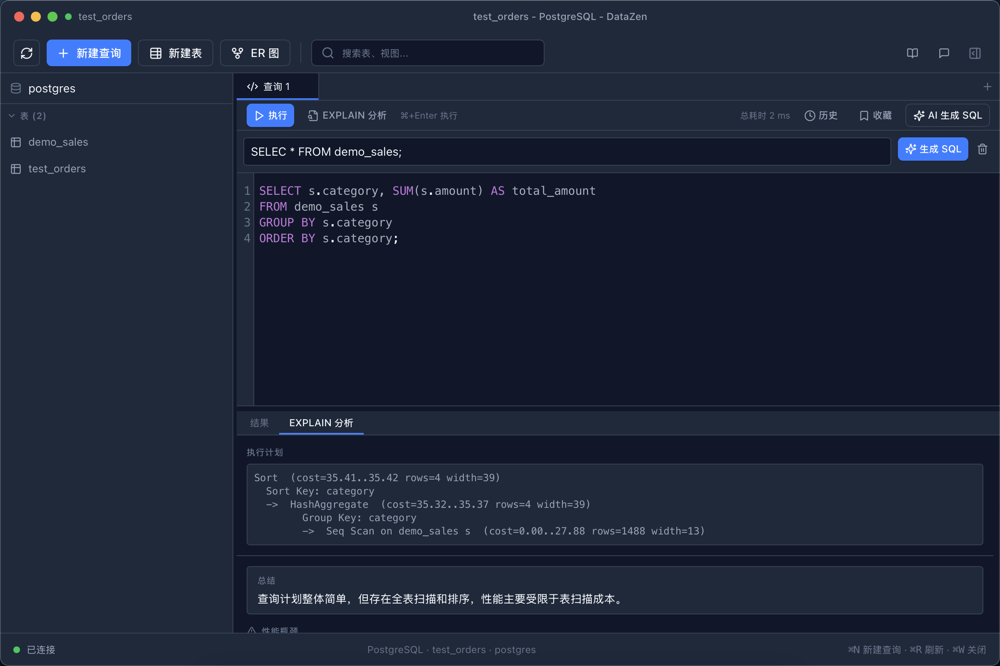
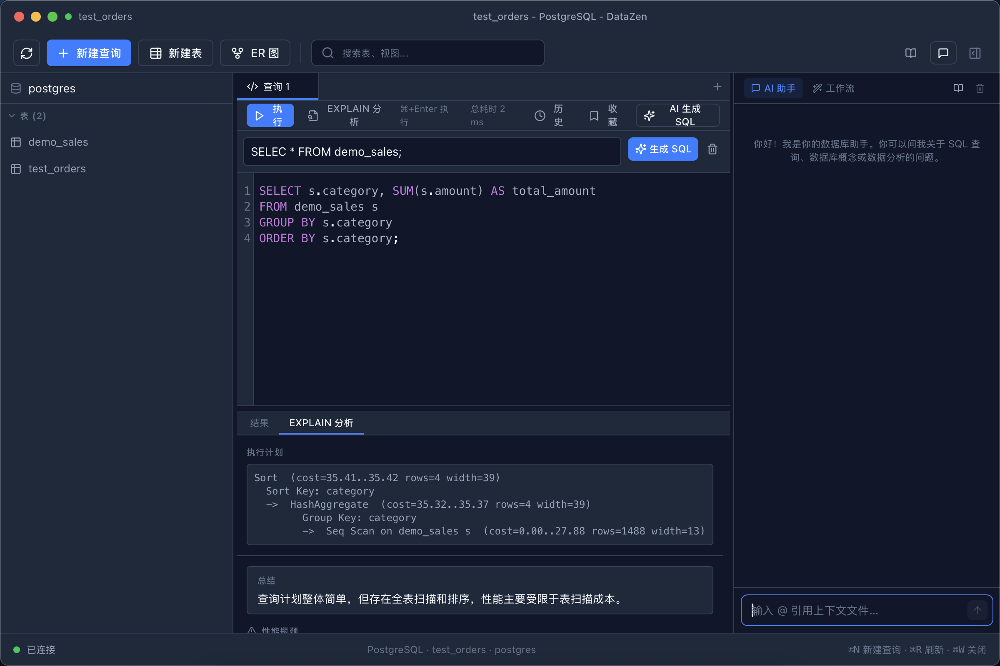
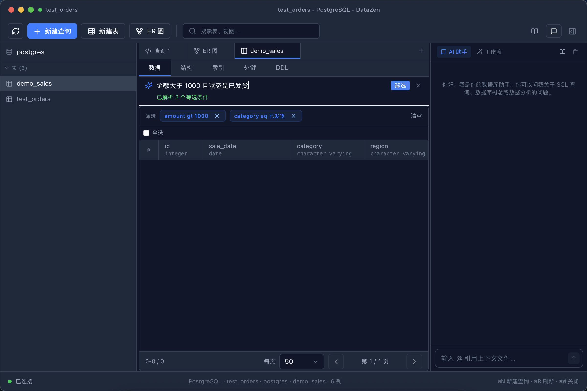
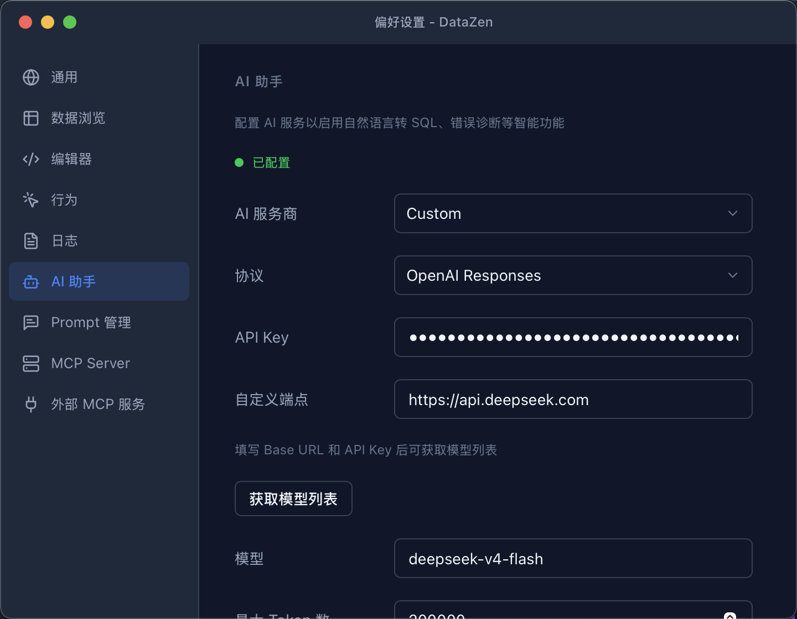

从「写 SQL」到「读懂数据」，AI 贯穿查询、诊断、分析与自动化的每一步。
想不起来表名或函数？直接用中文描述需求，AI 结合当前库的表结构生成 SQL，流式输出，点击即可执行。生成结果可以直接带入查询编辑器继续修改。

查询报错时点击「诊断」，AI 会结合错误信息和库结构定位原因，给出修正后的 SQL，一键应用到编辑器。

一条慢查询，执行计划是什么、瓶颈在哪、索引有没有命中？DataZen 把 EXPLAIN 结果可视化，并让 AI 直接告诉你该怎么优化。

侧边栏随时唤起 AI 对话，自动带上当前连接的库表结构，回答里的 SQL 可一键插入编辑器；还支持用 @ 引用本地文件作为上下文。
@ 引用本地文件（白名单 + 512KB 上限 + 路径遍历防护）
「金额大于 1000 且状态是已发货」——在筛选框里直接输入自然语言，AI 解析成结构化的筛选条件并应用，列名校验与空值运算符自动处理。


| Provider | 协议 | 说明 |
|---|---|---|
| OpenAI | Responses / Chat Completions | 官方 API 或兼容网关 |
| Anthropic | Messages | Claude 系列模型 |
| DeepSeek | Chat Completions | 支持 reasoning 输出 |
| 自定义端点 | 三种协议可选 | 任何 OpenAI 兼容服务（如本地推理） |
内置 9 个工具（查询、Schema、EXPLAIN、Workflow 等）+ 资源 + Prompts，支持 --mcp-stdio 无头模式，可接入任意 MCP 客户端，让外部 AI 直接操作你的数据库。
在 AI Chat 中连接外部 MCP Server，把文件系统、搜索、第三方工具等能力带进对话，扩展 AI 的可用工具集。